当操作异地机房里的服务器，使用rpm命令进行软件包安装时，不方便解决依赖关系。配置yum软件仓库，使用yum安装软件可以自动处理依赖关系，将系统光盘上传到服务器上，linux挂载iso光盘镜像文件，配置yum软件仓库
1 上传iso文件
使用xftp上传rhel6.4系统光盘镜像到/software
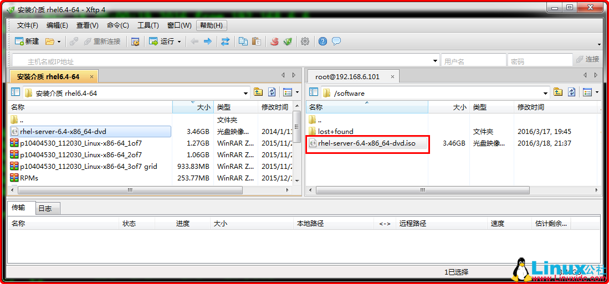
[root@rhel64 ~]# cd /software/
[root@rhel64 software]# ls -lh
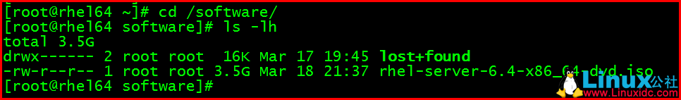
为方便使用，重命名光盘镜像文件
[root@rhel64 software]# mv rhel-server-6.4-x86_64-dvd.iso rhel64.iso
[root@rhel64 software]# ls -lh
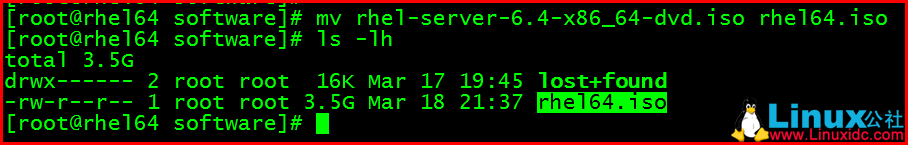
2 创建挂载点
[root@rhel64 ~]# mkdir /mnt/yum
[root@rhel64 ~]# ls -ld /mnt/yum

3 临时挂载iso文件
[root@rhel64 ~]# df -Th
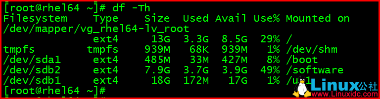
直接执行mount命令，提示使用-o loop选项
[root@rhel64 ~]# mount /software/rhel64.iso /mnt/yum/
[root@rhel64 ~]# mount -o loop /software/rhel64.iso /mnt/yum
[root@rhel64 ~]# df -Th
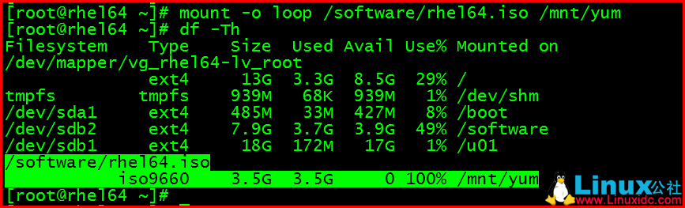
卸载
[root@rhel64 ~]# umount /mnt/yum
[root@rhel64 ~]# df -Th
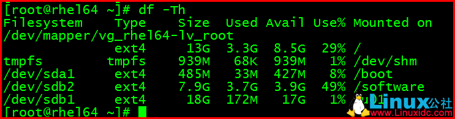
4 实现iso文件开机自动挂载
编写/etc/fstab文件，追加写入信息
/software/rhel64.iso /mnt/yum iso9660 loop 0 0
[root@rhel64 ~]# vi /etc/fstab
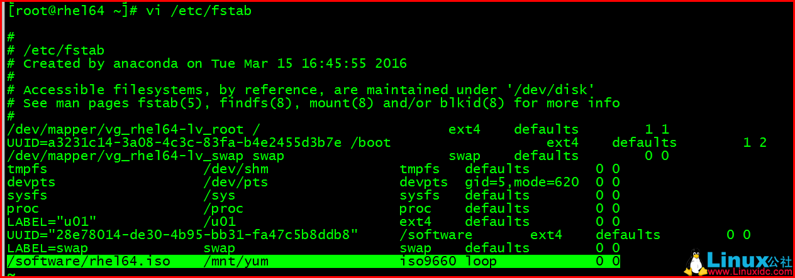
[root@rhel64 ~]# grep iso /etc/fstab
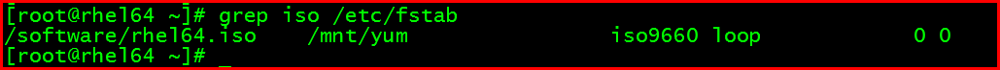
执行mount -a命令，挂载验证
[root@rhel64 ~]# mount -a
[root@rhel64 ~]# df -Th
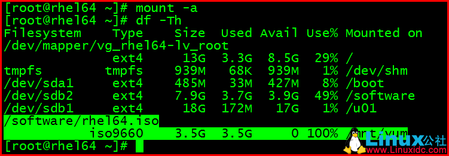
重启操作系统验证
[root@rhel64 ~]# reboot
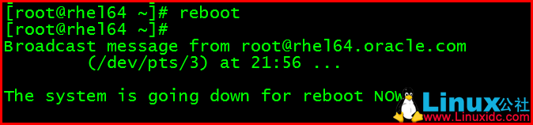
[root@rhel64 ~]# df -Th
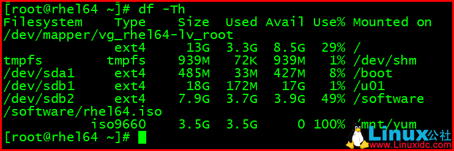
5 配置yum软件仓库
[root@rhel64 ~]# cat /etc/yum.repos.d/rhel-source.repo
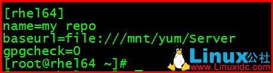
[root@rhel64 ~]# yum clean all
[root@rhel64 ~]# yum info zsh
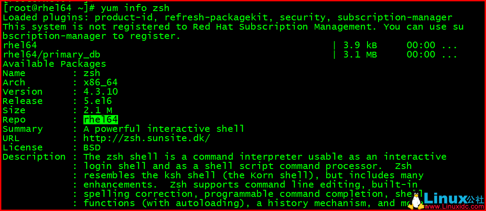
更多YUM相关教程见以下内容：
RHEL7 本地yum源配置 http://www.linuxidc.com/Linux/2017-01/139140.htm
CentOS 7 使用阿里云的yum源、PIP源 http://www.linuxidc.com/Linux/2017-01/13966.htm
CentOS及Red Hat Linux安装yum源 http://www.linuxidc.com/Linux/2017-02/140205.htm
CentOS 7更改yum源与更新系统 http://www.linuxidc.com/Linux/2017-01/140067.htm
RedHat7.0配置本地yum源 http://www.linuxidc.com/Linux/2017-01/139148.htm
软件包管理之前端管理工具yum http://www.linuxidc.com/Linux/2017-02/140270.htm
CentOS 7 使用阿里云的yum源、PIP源 http://www.linuxidc.com/Linux/2017-01/13966.htm
本文永久更新链接地址：http://www.linuxidc.com/Linux/2017-03/142087.htm